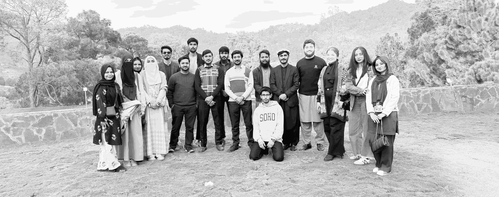

Batch 2025 Members
Meet the talented engineers behind the FAST ICD Batch 2025 tapeout projects.
Tapeout Projects – Spring 2026
Showcasing graduate-level tapeout projects in digital, mixed-signal, and advanced semiconductor research on Pakistan Semiconductor Summit '26
FAST ICD Batch 2025 presents tapeout-ready ASIC design projects, at the Pakistan Semiconductor Summit 2026, developed by students at the IC Design Lab. Projects span digital VLSI architectures, mixed-signal circuits, and cutting-edge semiconductor research targeting real silicon fabrication.
Each project is mentored by faculty experts, leveraging professional EDA tools such as Cadence Virtuoso, Innovus, and Synopsys for synthesis, verification, and physical design.
Bringing compute back home to edge devices which preserves data privacy, security and reduces the latency
View ProjectUltra-low power nano-processor architecture designed for biomedical implants and smart dust systems.
View ProjectHigh dynamic range modulo ADC architecture for next-generation signal acquisition and processing.
View Project
Meet the talented engineers behind the FAST ICD Batch 2025 tapeout projects.
For queries or collaboration opportunities, reach out to the IC Design Lab: